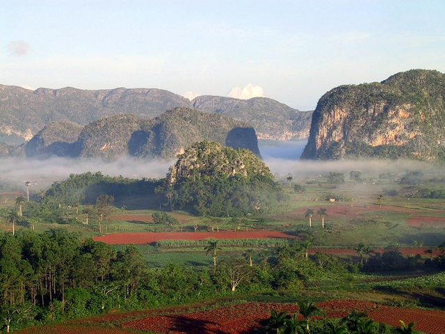
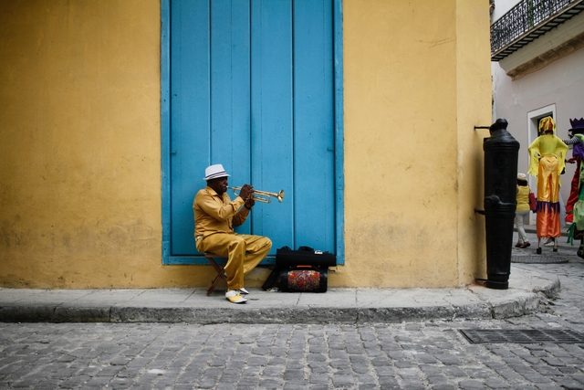
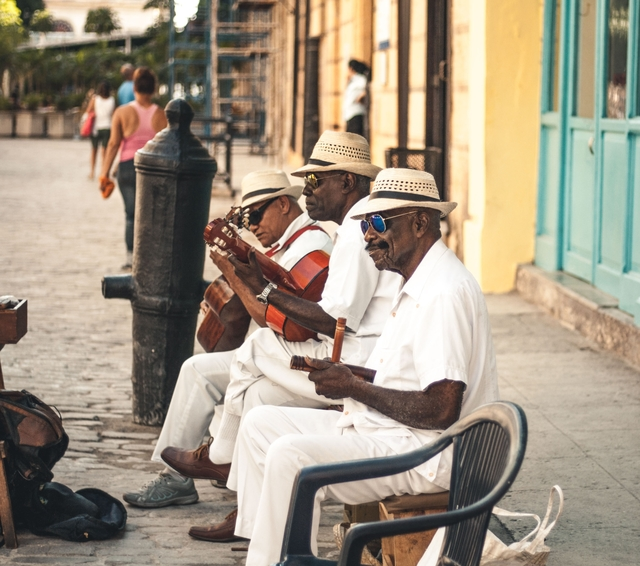
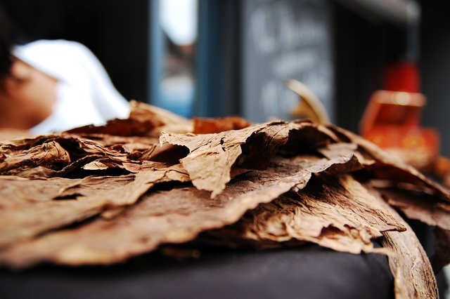
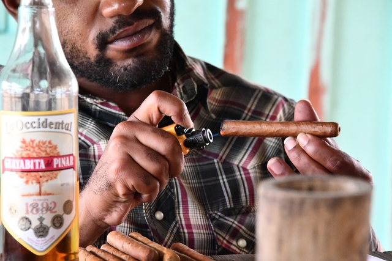
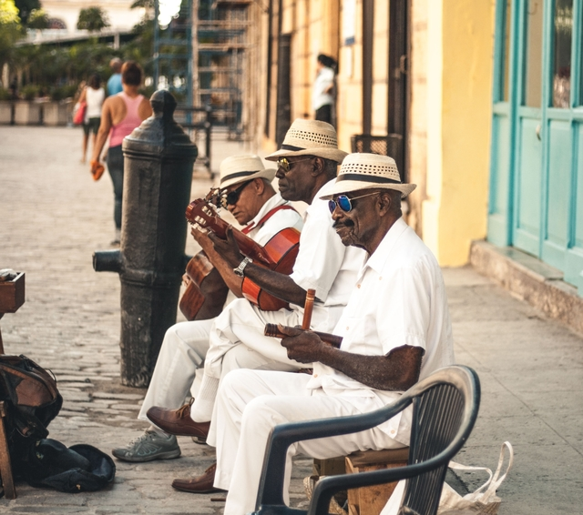
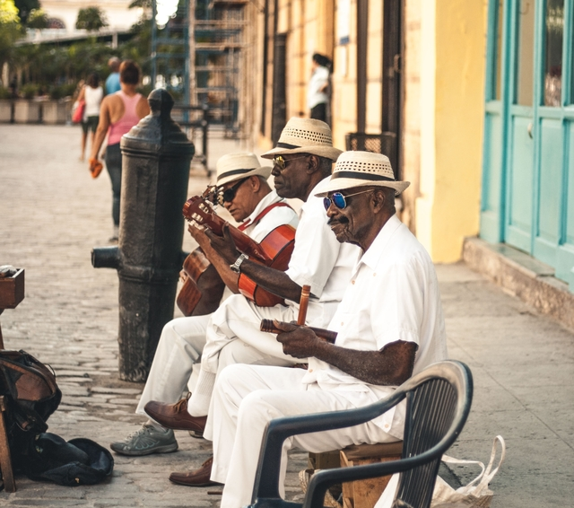
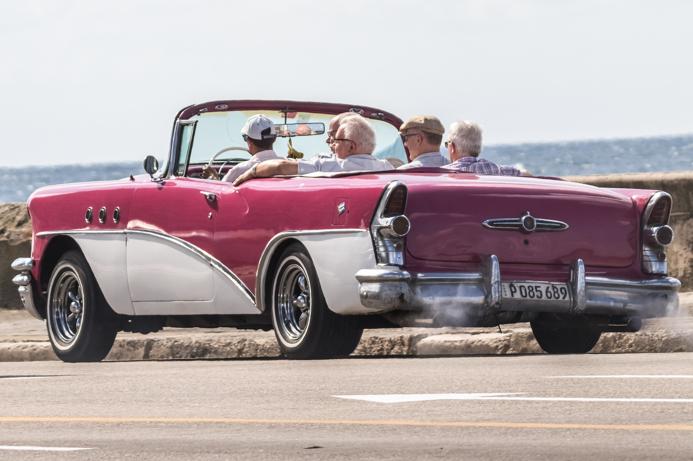
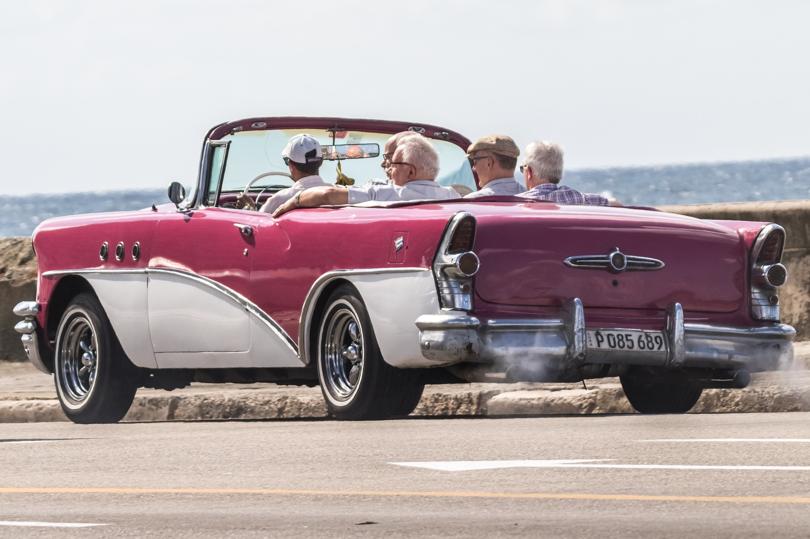

Vous préparez votre séjour à Cuba et vous demandez comment découvrir le pays? Vous trouverez sur cette page
une liste non exhaustive des meilleures activités à faire sur l'île.
Quelque soit la durée de votre séjour, il ne fait aucun doute que vous trouverez votre bonheur!
Visiter La Havane
Première découverte incontournable, la visite de La Havane, ville pleine de contrastes.
De nombreux quartiers sont à découvrir, la vieille ville saura sans aucun doute vous charmer avec ses merveilles architecturales.
Vous y retrouverez tous les emblèmes: les voitures, les couleurs et la musique!
C’est une excellente façon de débuter sa découverte de l'histoire et de la culture de Cuba.
Le quartier de La Habana Vieja
La richesse de son architecture et ses nombreux monuments, témoins de l'histoire de Cuba, ont permis la classification ce quartier comme patrimoine
mondial de l'UNESCO. Sa beauté brute séduit les touristes en quête d'authenticité. Les façades colorées et les petites rues enchevêtrées du quartier réprésentent
sans aucun doute l'image pleind ede contrastes de Cuba.
Le Capitole
Aujourd'hui siège de l'Académie des sciences de Cuba et musée, le Capitole est l'un des monuments les plus emblématiques du pays.
Il s'agit de la deuxième structure la plus haute de la Havane.
El Castillo de los Santos Tres Reyes Magos del Morro
El Morro, comme l'appellent les cubains, est l'un des lieux touristiques les plus visités de la ville.
Cette ancienne forteresse a été construite par les espagnols. Son phare embélatique est situé à l'entrée de la baie de La Havane et possède une riche histoire.
Le Malecón
Cette promenade de 8km qui londe la mer est un lieu très apprécié des locaux. Vous pourrez vous y balader tout en admirant la vue sur l'Altlantique.
Le lieu est particulièrement animé la nuit où musiciens et vendeurs y descendent.
Visiter Trinidad
Etape incontournable, la visite de la ville de Trinidad ancienne ville coloniale espagnole, inscrite au patrimoine mondial de l’UNESCO.
Perdez-vous dans les ruelles et rues pavées en admirant les jolies bâtisses pastelles qu'offre la ville.
N'hésitez pas à passer du coté de la plaza Mayor ou encore à visiter le museo Romántico.
Nichée entre mer, montagnes, et campagne, les activités autour de la ville ne manquent pas!
Profitez des merveilles de la nature cubaine
La vallée de Viñales
La Vallée de Viñales fait parties des étapes incontournables d'un séjour à Cuba.
Son décor spectaculaire et ses paysages de mogotes la classent au patrimoine mondial de l’Unesco.
C'est dans ce cadre exceptionnel que vous pourrez visiter les fermes de café et de tabac.
N'hésitez pas à visiter la vallée à cheval!
Randonnée dans le parc Guanayara dans le Gran Parque Natural Topes de Collantes
Le parc de Guanayara offre une végétation luxuriante, des bassins tranquilles aux eaux turquoises et une faune variée.
Situé dans le Gran Parque Natural Topes de Collantes, à environ une heure de Trinidad, vous aurez la posisbilité de faire une visite guidée à travers les collines et les grottes.
les bananiers, les fleurs sauvages, les bambous et bien d’autres encore. Les guides vous feront découvrir la faune et la flore subtropicales du parc.

Cayo Levisa
L'île Cayo Levisa, séparée par la mer des Caraïbes de la côte nord de Cuba, est accessible par bateau. Couverte par la Mangrove, elle ne possède qu'une plage de sable blanc.
Ses eaux turquoises sauront vous séduire. Vous pourrez vous y baigner ou louer masques, pédalos ou canoës pour observer de plus près la vie sous-marine du lagon.
Situé près de Varadero, sur la côte nord de Cuba, cet îlot pratiquement vierge de sable blanc offre un cadre idyllique pour différentes activités nautiques.
L'excursion depuis Varadero s'effectue en catamaran. Le récif corallien et la magrove qui enoure la zone abritent par ailleurs de nombreuses espèces de faune.
Connue dans le monde entier pour sa salsa et pour son sens de la fête, de nombreux festivals se succèdent tout au long de l’année à Cuba.
Les musiques cubaines, entraînantes, sont nées d’influences multiples entre Europe, Afrique et Amérique Latine.
Vous aurez sans aucun doute le plaisir de découvrir et d'écouter de nombreux artistes en sillonnant le pays.
Ainsi, carnavals, festival de ballet, de salsa, de jazz et autres célébrations de la culture afro-cubaine sauront vous divertir et vous plonger dans la culture et l'ambiance locale.
Animations musicales et festivals
Connue dans le monde entier pour sa salsa et pour son sens de la fête, de nombreux festivals se succèdent tout au long de l’année à Cuba.
Les musiques cubaines, entraînantes, sont nées d’influences multiples entre Europe, Afrique et Amérique Latine.
Vous aurez sans aucun doute le plaisir de découvrir et d'écouter de nombreux artistes en sillonnant le pays.
Ainsi, carnavals, festival de ballet, de salsa, de jazz et autres célébrations de la culture afro-cubaine sauront vous divertir et vous plonger dans la culture et l'ambiance locale.
Pour un avant-goût de l'ambiance cubaine, lancez la radio!


La Fábrica de Arte Cubano
La Fabrica de arte cubano est un centre créatif et culturel situé dans le quartier du Vedado de La Havane. cet ancien entrepôt rénové accueille les artistes de la capitale.
Il abrite des galeries, des espaces de performances et une piste de danse. Les créations présentées sont renouvelées chaque mois. Véritable incubateur de jeunes artistes,
n'hésitez pas à ajouter ec lieu à vos visites de la capitale!
Le Festival international du nouveau cinéma latino-américain de La Havane
Souvent considéré comme pays du cigare et du rhum, découvrez comment ils sont fabriqués!
Des visites guidées, à Viñales pour les cigares ou La Havane pour le rhum, sont organisées pour découvrir toute la chaîne de fabrication.
Et cerise sur le gâteau, dégustation des produits une fois la visite terminée. Il vous sera également possible de les acheter.


Visiter La Havane en voiture américaine
La location de voitures anciennes, emblématiques du pays, est souvent prisée par les touristes. Vous serez guidés par un local et pourrez ainsi découvrir quelques lieux de la capitale comme le Malecon ou la place de la révolution par exemple.


 

 
